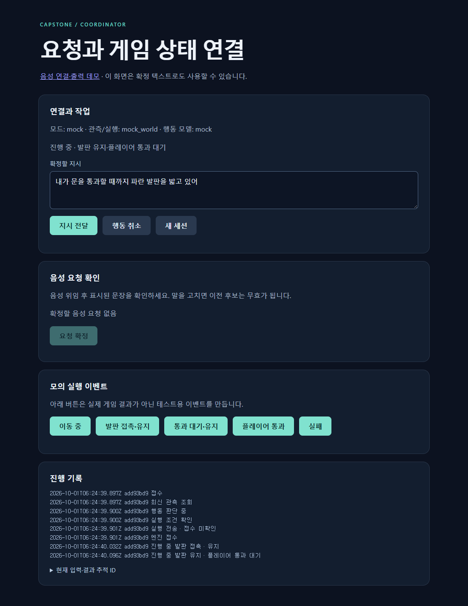

WEEKLY REVIEW / 2026.10.02
인간–AI 협동 게임
조정기 설계와
이번 주 구현
말로 한 부탁이
게임 속 행동으로 이어지도록
이영호 · 더미 1팀
게임콘텐츠캡스톤디자인 / 지도교수 이대호
AI는 2개. 조정기·기억·실행기는 일반 코드.
01 / 전체 설계
조정기가 대화·게임 상태·행동 판단을 연결
사용자가 확정한 지시를 받아, 현재 가능한 행동을 판단하고 실행기에 전달합니다.
실행 뒤에는 Unreal이 확인한 진행·완료·실패를 조정기가 다시 받습니다.
02 / 조정기의 판단 입력
지시·대화·게임 사실을 한 번에 전달
모델이 무엇을 보고 선택했는지 추적할 수 있도록 입력과 실행 결과를 연결했습니다.
행동 AI에 전달하는 맥락
확정된 사용자 지시“내가 문을 통과할 때까지
파란 발판을 밟고 있어.”
관측 가능한 객체·상태·관계
지금 실행 가능한 행동 후보
사용자와 대화 AI 양쪽 발화
관련된 요청·맥락과 출처
현재 진행 중인 행동과
게임에서 확인한 실제 결과
행동 제안을 받은 뒤
바로 실행하기 전에
세 가지를 확인
- 허용된 행동인가?현재 관측의 후보·대상과 일치
- 아직 같은 요청인가?수정·취소 전의 늦은 응답 제외
- 지금도 실행 가능한가?재관측 + Unreal의 최종 검사
AI가 “도착했다”고 말한 것과
게임에서 확인한 도착을 구분합니다.
03 / 실행 결과를 관리하는 이유
발판에 도착해도, 요청은 아직 진행 중
“내가 통과할 때까지 밟고 있어.” → 통과할 때까지 유지했는지를 확인해야 완료입니다.
Unreal → 조정기 상태 보고
- 접수
accepted - 이동 중
moving - 발판 유지
holding - 플레이어 통과 대기
waiting_for_player - 통과까지 유지 확인
completed
완료 조건
플레이어 통과 + 통과까지 발판 유지
04 / 이번 주 구현 · 연결 규격
각자 만든 기능은 JSON 5종으로 연결
게임·모델의 내부 구현이 바뀌어도, 양끝의 변환 코드를 바꿔 연결할 수 있도록 설계했습니다.
| 데이터 | 누가 누구에게 | 전달하는 내용 |
|---|---|---|
01게임 관측observation | 경민의 게임 필터 → 영호 | 현재 보이는 객체·상태·실행 가능한 행동 |
02판단 입력decision_input | 영호 → 준영의 행동 AI | 사용자 지시·대화·기억·최신 관측 |
03판단 응답decision_response | 준영의 행동 AI → 영호 | 허용된 후보에서 고른 행동 / 되물을 질문 |
04실행 명령execution_command | 영호 → 준영의 Unreal 실행기 | 검사를 통과한 행동·실행 ID·실행 조건 |
05실행 결과execution_event | 준영의 Unreal 실행기 → 영호 | 실제 접수·이동·유지·완료·실패·정지 |
현재 행동 후보 move_to hold_plate wait
공통 계약 v1 구현 · 실제 팀원 규격과 대조 예정
05 / 이번 주 구현 · 조정기 동작
요청부터 실행 결과까지 관리하는 흐름 구현
개발 화면에서 지시 전달·취소와 실행 상태를 확인하며, 연결부를 모의 환경에서 검증했습니다.

전체 검증 화면 보기 ↗
음성 요청 연결
대화에서 행동 요청 후보 생성
사용자 확정 후 조정기로 전달
변경·취소 처리
이전 요청의 늦은 응답 제외
중복 명령·역순 결과 검사
실제 결과 기준 관리
완료·실패·정지 확인을 구분
결과 미확인은 미확인으로 유지
10/1 main 반영 869708e실제 퍼즐·모델·새 게임 음성 경로의 통합 시연은 남아 있습니다.
06 / 검증 범위
공통 흐름은 검증했고, 실제 팀원 통합은 다음
2026.10.01 재검증 결과 · 외부 모델·게임·음성 서비스는 모의 환경
Node 테스트 통과
기존 34 + 신규 21
새 개발 화면 통과
접수·유지·완료·질문 등
기존 브라우저 회귀 통과
기존 웹 기능 영향 확인
직접 확인한 범위
- 관측 → 판단 → 유지·통과 완료의 모의 왕복
- 지연 응답·취소·중복·실행 미확인 처리
- UE 5.8.3 Editor·Game 빌드 통과 (9/30)
- 기존 Unreal 출력·연결 회귀 (9/30)
실제 연결로 확인할 범위
- 경민의 퍼즐 관측 JSON과 실시간 갱신
- 준영의 모델 응답과 실제 캐릭터 동작
- 새 게임 모드의 실제 마이크·음성 왕복
- 명령부터 행동 시작까지 걸리는 시간
테스트 개수는 통과한 시나리오 수입니다. 실제 게임 성능이나 모델 정확도 수치가 아닙니다.
07 / 다음 주 공동 목표
10.08까지
말로 내린 명령이
실제 움직임으로 이어지게
회의에서 정한 다음 작업
실제 데이터를 받도록 연결 작업 마무리
게임 관측·모델 응답·실행 결과 연결
게임 JSON의 행동을 실제 동작으로 연결
조정기 입력을 보고 가능한 행동을 선택·반환
방경민의 다음 주 세부 작업은 회의 원문에 미기재
통합을 위해 함께 맞출 것 · 제안
게임과 모델의 실제 입출력
게임 쪽 객체 ID·상태 JSON·접촉/통과 이벤트
모델 쪽 API 주소·요청/응답 예제·행동 목록
음성 시연과 시간 측정
확정 지시 → 판단 → 실제 움직임 확인
모델 응답과 행동 시작 지연을 나눠 측정
1초 이하 응답은 개선 희망 목표 · 현재 실측값 없음
이번 주에는 연결 구조를 만들었고, 다음 주에는 실제 게임 데이터로 연결을 확인합니다.